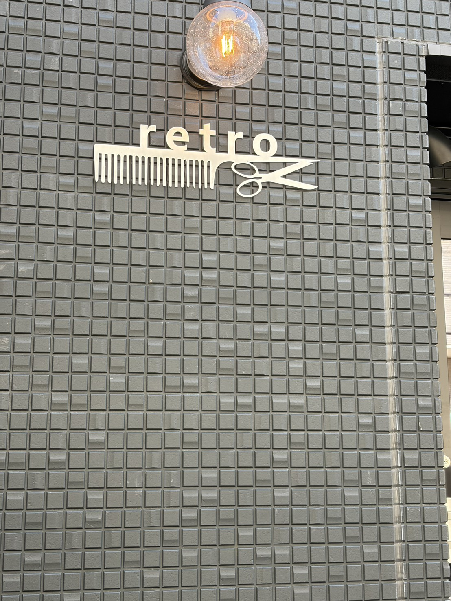
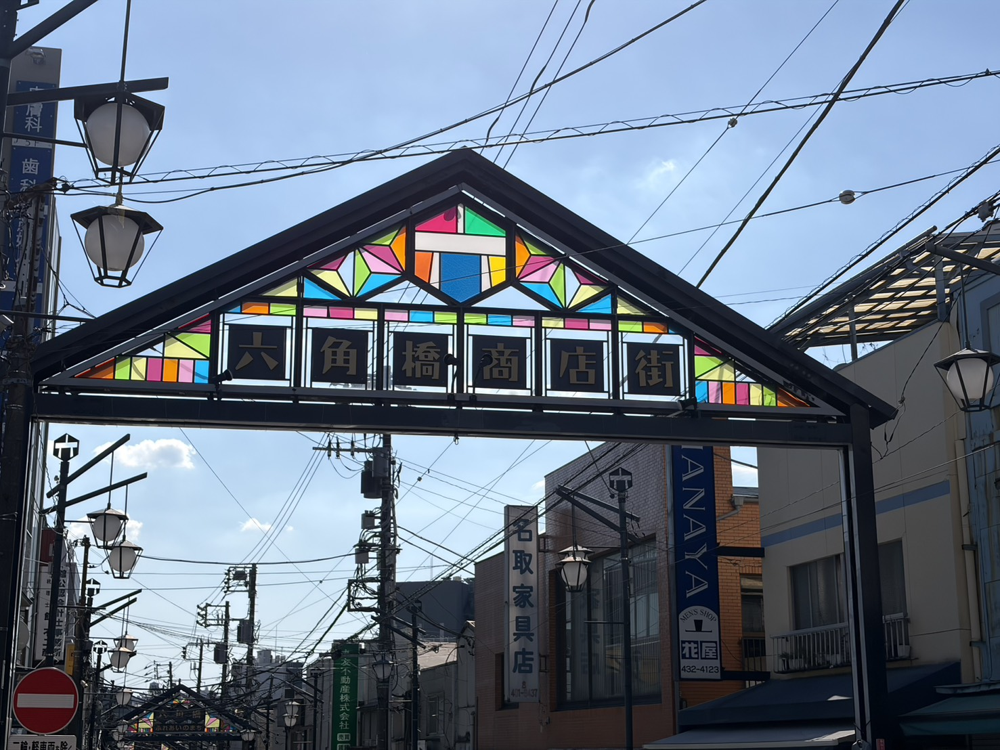
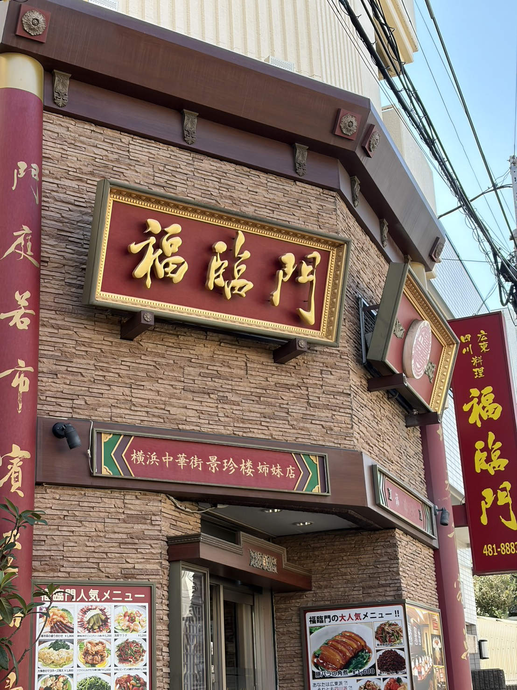

散歩をしているときに目に留まった。お店の名前だけでなく、下に櫛とはさみをデザインに組み込むことで美容院だとわかりやすくなっている。黒い壁に金色の文字がおしゃれで自分の中ではかなり好き。

いつも通る道の途中にあるもの。レトロさがあっていい。太陽の光が当たることでまた違った美しさがでる。調べたところによると神奈川大学大学院生が協力して作られたらしい。
詳しくはこちら→六角商店街

いつも通る道の途中にあるもの。普通に周りにもこのような中華屋さんはあるが、なぜ赤と金色が入っていると中華だと思ってしまうのか気になり撮影。調べたところ、赤は火の意味があるらしい。昔は厄払いの意味があったそうだが、今はおめでたい意味があるらしい。金は金や富を意味するらしい。この二つの意味を中国の人たちは好みこのイメージが生まれたのだ。
詳しくはこちら→赤と金の謎